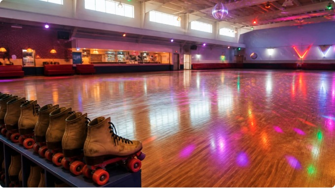

Fun Facts About Roller Skating

Here are a few fun facts about roller skating.
- Roller skates use wheels to help people glide across a smooth surface.
- Quad skates usually have four wheels arranged in two pairs.
- Inline skates have wheels arranged in one line.
- Roller skating can be done indoors at a rink or outdoors on suitable paths.
- Skating uses balance and coordination.
- Many roller rinks play music while people skate.